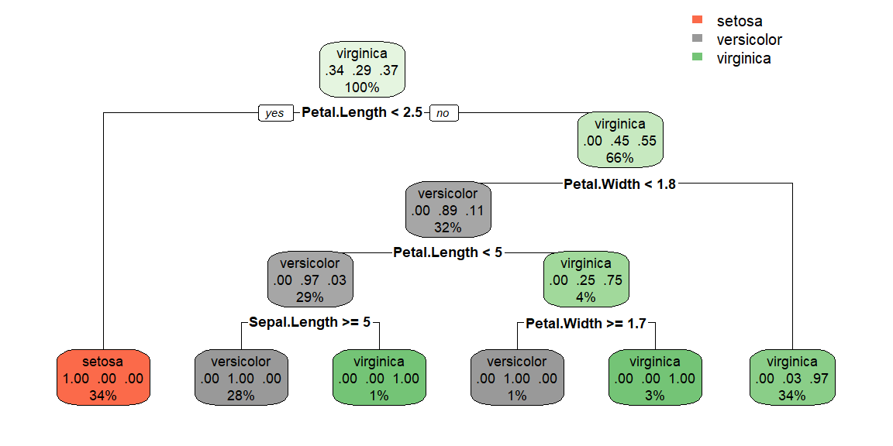
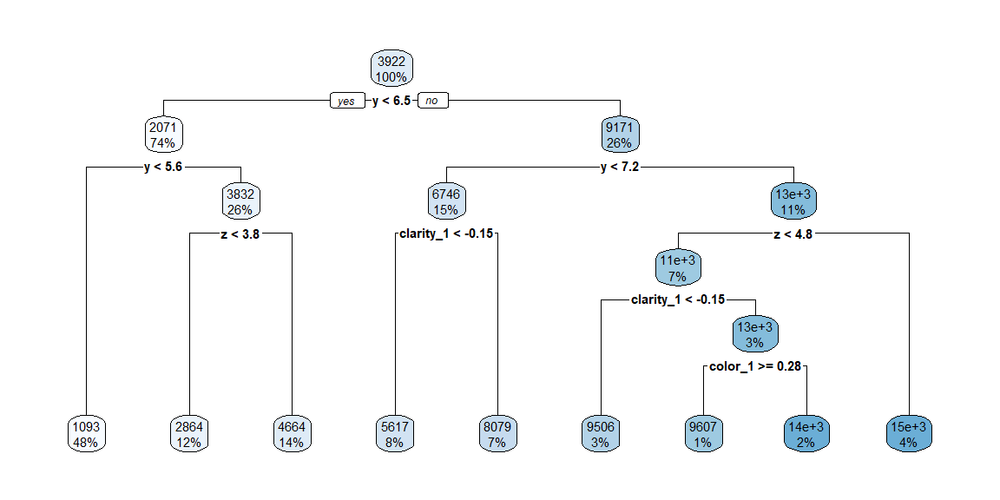

5 Decision Trees
5.1 Introduction
Decision trees are a fundamental machine learning technique used for both classification and regression tasks. At their core, decision trees model decisions and their possible consequences, including chance event outcomes, resource costs, and utility. They are a non-parametric supervised learning method used for classifying data points (in classification trees) and predicting continuous values (in regression trees).
Historical Context and Evolution: Decision trees have been a part of the computational and statistical landscape since the 1960s, evolving from their initial use in decision analysis and research into an indispensable tool in the machine learning toolkit. The development of algorithms such as ID3 by Ross Quinlan in the 1980s and its successors, C4.5 and CART (Classification and Regression Trees), marked significant milestones in making decision trees more efficient, accurate, and applicable to a broader range of data types and machine learning problems.
Intuition Behind Decision Trees: At the heart of decision trees is a simple yet powerful idea—mimicking human decision-making processes through a structured, hierarchical approach. By breaking down complex decisions into a series of simpler choices, each based on specific attributes or features of the data, decision trees can navigate the intricacies of real-world data and arrive at predictions or classifications. This intuitive approach to problem-solving, mirroring the “if-then-else” decision-making logic, makes decision trees both accessible and powerful for addressing diverse analytical challenges.
Significance in Machine Learning and Artificial Intelligence: Decision trees serve as foundational building blocks for more complex models, such as random forests and gradient boosting machines, highlighting their importance not only as standalone models but also as components in ensemble methods. Their ability to handle both numerical and categorical data, accommodate non-linear relationships without assuming data distribution, and provide interpretable models that can be easily visualized and understood, underscores their versatility and broad applicability. Furthermore, the role of decision trees in feature importance analysis, where they help in identifying the most significant predictors in a dataset, showcases their utility in exploratory data analysis and model refinement processes.
5.2 Structure of Decision Trees
Decision trees are graphical representations of decision-making processes. They consist of nodes and branches, where each node represents a decision point or an outcome, and branches represent the choices leading to those decisions or outcomes. The structure can be divided into three main components:
1. Root Node:
This is the starting point of the tree, where the entire dataset is considered before any splits are made. The root node identifies the feature that provides the most significant information gain or the best split based on a specific criterion, like Gini impurity or entropy for classification trees, and variance reduction for regression trees.
Gini Impurity
Gini impurity is a measure of how often a randomly chosen element from the set would be incorrectly labeled if it was randomly labeled according to the distribution of labels in the subset. The Gini impurity of a dataset is minimal (zero) when all the elements belong to a single class, indicating perfect homogeneity.
The Gini impurity of a node can be calculated using the formula:
\[ Gini(t) = 1 - \sum_{i=1}^{J} p_i^2 \]
where \(p_i\) is the proportion of the samples that belong to class \(i\) at a given node \(t\), and \(J\) is the number of classes. The goal in splitting a node is to achieve the lowest possible Gini impurity in the resulting child nodes.
Example: Iris dataset
The Iris dataset consists of 150 observations of iris flowers, each with 4 features (sepal length, sepal width, petal length, and petal width) and classified into one of three species (setosa, versicolor, virginica).
Imagine we have a subset of the Iris dataset with 10 observations:
- 6 of Iris setosa
- 3 of Iris versicolor
- 1 of Iris virginica
For our subset:
- The proportion of Iris setosa (\(p_{setosa}\)) = 6/10 = 0.6
- The proportion of Iris versicolor (\(p_{versicolor}\)) = 3/10 = 0.3
- The proportion of Iris virginica (\(p_{virginica}\)) = 1/10 = 0.1
Plugging these into the formula gives us:
\[ Gini(t) = 1 - (0.6^2 + 0.3^2 + 0.1^2) = 1 - (0.36 + 0.09 + 0.01) = 1 - 0.46 = 0.54 \]
Interpretation
The Gini impurity of 0.54 indicates a moderate level of impurity or mixture of classes within this subset of the Iris dataset. A Gini impurity of 0 would mean the subset is perfectly homogeneous (all observations belong to a single class), while a Gini impurity of 0.5 (for a binary classification) or higher in multi-class scenarios like ours suggests a higher level of mixture among classes.
In the context of building a decision tree, the goal would be to find the feature and split point that decrease the Gini impurity the most for the resulting subsets. For example, if splitting by petal length at a certain threshold results in two groups—one with mainly Iris setosa and another with a mixture of Iris versicolor and Iris virginica—but both with lower Gini impurity scores than 0.54, that split improves the homogeneity of our subsets with respect to the target variable (species).
Entropy
Entropy, a concept borrowed from information theory, measures the level of uncertainty or disorder within a dataset. In the context of decision trees, entropy can be used to quantify the impurity or randomness in the dataset’s class distribution at a node. A dataset with elements from only one class has zero entropy (no disorder), while a dataset evenly split between two or more classes has higher entropy.
The entropy of a node is given by the formula:
\[ Entropy(t) = -\sum_{i=1}^{J} p_i \log_2(p_i) \]
Here, \(p_i\) represents the proportion of the samples belonging to class \(i\) at node \(t\), and \(J\) is the total number of classes. The decision to split at a particular node aims to produce subsets with lower entropy compared to the parent node.
Comparison and Usage in Decision Trees
Both Gini impurity and entropy aim to measure the homogeneity of a dataset; they are just different mathematical methods for doing so. The choice between using Gini impurity or entropy for building a decision tree often depends on the specific dataset and problem context, though in practice, the difference in the trees they produce is often quite small.
- Gini Impurity is faster to compute, as it doesn’t involve logarithmic functions, which makes it a good default choice for decision tree learning algorithms.
- Entropy might produce slightly more balanced trees because it tends to penalize non-uniform class distributions more heavily than Gini impurity.
2. Internal Nodes:
Internal nodes play a crucial role in the structure and functioning of decision trees, acting as decision points that guide the splitting of the dataset into increasingly homogeneous subsets based on the values of different features. Each internal node represents a “test” or “question” applied to a particular attribute or feature, determining the path down the tree that an observation will follow.
Characteristics of Internal Nodes
Feature Selection: Each internal node tests a specific attribute or feature of the data. The choice of which feature to test at each node is determined by a criterion that aims to maximize the homogeneity of the subsets created by the split. For classification tasks, this criterion is often Gini impurity or entropy, whereas for regression tasks, variance reduction is commonly used.
Decision Point: An internal node divides the dataset into two or more paths, typically representing different outcomes of the test applied. In binary decision trees, which are the most common, each internal node has exactly two branches, but multiway splits are also possible in other types of decision trees.
Recursive Splitting: After a dataset is split at an internal node, the process of feature selection and splitting is applied recursively to each child subset. This process continues until a stopping criterion is met, such as reaching a maximum tree depth, achieving a subset size smaller than a predefined threshold, or when no further improvement in homogeneity can be achieved.
Process of Creating Internal Nodes
The process of creating internal nodes involves several key steps:
Feature Selection and Split Criterion: At each step, the decision tree algorithm evaluates each feature to determine which one to use for splitting the dataset at the current node. This involves calculating the chosen metric (e.g., Gini impurity, entropy, or variance reduction) for every possible split and selecting the feature and split point that result in the highest gain (i.e., the greatest reduction in impurity or variance).
Dataset Splitting: Once the best feature and split point are identified, the dataset is divided into two or more subsets according to the outcomes of the test at the internal node. Each subset corresponds to a branch leading to a child node.
Recursive Application: The algorithm then recursively applies the same process of feature selection and dataset splitting to each child subset, creating further internal nodes and branches, until stopping criteria are met.
Example: The Iris Dataset
Consider a decision tree being trained on the Iris dataset. An internal node might test the petal length of an iris flower. Suppose the best split identified at this node is to divide the dataset into flowers with a petal length less than 2.5 cm and those with a petal length greater than or equal to 2.5 cm. This test on petal length is the “question” posed by the internal node, and it effectively separates Iris setosa (which typically has shorter petals) from Iris versicolor and Iris virginica (which have longer petals). Each of the resulting subsets is then passed to child nodes where further tests (internal nodes) are applied based on other features, such as petal width or sepal length, following the same process of maximizing homogeneity within the subsets.
Internal nodes are thus the mechanism by which decision trees make sequential decisions, leading to the classification or regression predictions at the leaf nodes. Their creation and organization within the tree are fundamental to the model’s ability to accurately represent and predict the underlying relationships in the data.
3. Leaf Nodes: Leaf nodes in decision trees are the terminal points where decisions are made or values are predicted, concluding the path from the root through the internal nodes based on the attributes of the data being analyzed. These nodes do not split any further and represent the final output of the decision-making process within the tree structure. In the context of decision trees, there are two primary types of tasks they can be used for, each defining what a leaf node represents:
Classification Trees: In classification tasks, each leaf node is associated with a class label. The path from the root to a leaf node corresponds to a series of decisions based on the attributes of the dataset that leads to a classification decision. For example, in a decision tree designed to classify emails as “spam” or “not spam”, a leaf node would represent one of these two categories. The classification at a leaf is determined by the majority class of the samples that end up in the leaf after applying the decision rules encoded in the tree’s structure. The decision-making process is straightforward; starting from the root, the tree evaluates the attributes of the instance at each internal node, making a decision at each step on which branch to follow, until it reaches a leaf node that provides the final classification.
Regression Trees: For regression tasks, each leaf node predicts a continuous value. Instead of leading to a categorical outcome, the path through the tree culminates in a prediction of a numeric quantity. This could be, for instance, the predicted price of a house based on features like its size, age, and location. In regression trees, the value assigned to a leaf node is usually the mean or median of the values of the instances that fall into that leaf, providing a prediction for new instances that reach the leaf.
The Role and Importance of Leaf Nodes:
- Final Output: Leaf nodes represent the decision or prediction outcome of the tree, making them critically important to the tree’s overall purpose. They are the actionable results derived from the series of tests conducted at internal nodes.
- Interpretability: The path to a leaf node, consisting of a series of decisions based on clear criteria, contributes to the interpretability of decision trees. One can easily trace back the decisions made by the tree to understand why a particular prediction or classification was made.
- Simplicity: Despite their simplicity, leaf nodes encapsulate the complex decision-making process of a decision tree, making complex data relationships understandable through a series of binary decisions.
- Model Performance: The creation of leaf nodes is directly influenced by the criteria used to split data at internal nodes (e.g., Gini impurity, entropy, variance reduction). These criteria aim to maximize the homogeneity of the data points within each leaf, which is crucial for the model’s accuracy and ability to generalize.
5.3 Example Using tidymodels
To illustrate the use of decision trees with tidymodels in R, let’s consider a simple example where we predict the species of the iris flower based on its measurements. This example involves creating a decision tree classification model.
Setting Up the Environment
First, ensure you have tidymodels and rpart packages installed. The rpart package is used for creating decision trees.
Preparing the Data
data(iris)
set.seed(123) # For reproducibility
# Split the data into training and testing sets
iris_split = initial_split(iris, prop = 0.75)
iris_train = training(iris_split)
iris_test = testing(iris_split)
#setup data for cross validation to tune the model
dat_folds = vfold_cv(iris_train, v = 5, strata = Species)Creating the Model and Recipe
Note that there are two hyperparameters we need to determine for decision trees. They are:
-
tree_depthwhich is the maximum number of node levels the tree can have -
min_n1which is the minimum number of observations in a node that are required for the node to be split further.
We will fine tune these hyperparameters using cross validation.
# Define the model specification
dt_model = decision_tree(tree_depth = tune(),
min_n = tune()) |>
set_engine("rpart") |>
set_mode("classification")
recipe = recipe(Species ~ ., data = iris_train)Fine Tune the Model
#setup the possible values of the hyperparameters.
#by default, tree_depth checks values from 1 to 15
#min_n defaults to values between, 2 and 40
tuning_grid = grid_regular(
tree_depth(),
min_n(),
levels = 10
)
#fine tune the model
tune_results = tune_grid(
object = workflow() |>
add_recipe(recipe) |>
add_model(dt_model),
resamples = dat_folds,
grid = tuning_grid,
metrics = metric_set(accuracy)
)
best_params = select_best(tune_results, metric = "accuracy")
best_params# A tibble: 1 × 3
tree_depth min_n .config
<int> <int> <chr>
1 4 2 Preprocessor1_Model003Fit the final model
fitted_model = finalize_workflow(
workflow() |>
add_recipe(recipe) |>
add_model(dt_model),
best_params
) |>
fit(data = iris_train)Let’s first examine how well we fit the training data.
pred_train = predict(fitted_model, new_data = iris_train) |>
bind_cols(iris_train)
train_metrics = metrics(pred_train, truth = Species, estimate = .pred_class)
train_conf_mat = conf_mat(pred_train, truth = Species, estimate = .pred_class)
print(train_metrics)# A tibble: 2 × 3
.metric .estimator .estimate
<chr> <chr> <dbl>
1 accuracy multiclass 0.991
2 kap multiclass 0.987print(train_conf_mat) Truth
Prediction setosa versicolor virginica
setosa 38 0 0
versicolor 0 32 0
virginica 0 1 41We can visualize the decision tree using the rpart.plot library.
library(rpart.plot)
tree_fit = fitted_model |>
extract_fit_parsnip()
rpart.plot(tree_fit$fit)
Predicting and Evaluating
Let’s now predict the testing data.
# Make predictions
predictions = predict(fitted_model, iris_test) |>
bind_cols(iris_test)
# Evaluate the model
test_metrics = metrics(predictions, truth = Species, estimate = .pred_class)
test_conf_mat = conf_mat(predictions, truth = Species, estimate = .pred_class)
print(test_metrics)# A tibble: 2 × 3
.metric .estimator .estimate
<chr> <chr> <dbl>
1 accuracy multiclass 0.947
2 kap multiclass 0.920print(test_conf_mat) Truth
Prediction setosa versicolor virginica
setosa 12 0 0
versicolor 0 15 0
virginica 0 2 9Note that the accuracy is slightly below the training data accuracy.
5.4 4. Decision Trees for Regression
Regression trees are used when the target variable is continuous. Instead of predicting a class for each instance, regression trees predict a real number. For example, a regression tree might predict the price of a house based on features such as the number of bedrooms, the house’s age, and its location.
Example: Diamonds dataset
library(tidymodels)
library(ggplot2) # For the diamonds dataset
# Load the diamonds dataset
data(diamonds)
# Sample for a manageable size
set.seed(123)
diamonds_sample = diamonds |> sample_n(2000)
# Initial data split
split = initial_split(diamonds_sample, prop = 0.75)
train_data = training(split)
test_data = testing(split)
#setup data for cross validation to tune the model
dat_folds = vfold_cv(train_data, v = 5)
# Create a recipe
recipe = recipe(price ~ ., data = train_data) |>
step_dummy(all_nominal(), -all_outcomes())
#setup model
dt_model = decision_tree(tree_depth = tune(),
min_n = tune()) |>
set_engine("rpart") |>
set_mode("regression")
#setup tuning grid
tuning_grid = grid_regular(
tree_depth(),
min_n(),
levels = 10
)
#fine tune the model
tune_results = tune_grid(
object = workflow() |>
add_recipe(recipe) |>
add_model(dt_model),
resamples = dat_folds,
grid = tuning_grid,
metrics = metric_set(rmse)
)
#get the best hyperparameters
best_params = select_best(tune_results, metric = "rmse")
best_params# A tibble: 1 × 3
tree_depth min_n .config
<int> <int> <chr>
1 5 2 Preprocessor1_Model004#fit the final model
fitted_model = finalize_workflow(
workflow() |>
add_recipe(recipe) |>
add_model(dt_model),
best_params
) |>
fit(data = train_data)
#see how well the model fit the training data
pred_train = predict(fitted_model, new_data = train_data) |>
bind_cols(train_data)
train_metrics = metrics(pred_train, truth = price, estimate = .pred)
print(train_metrics)# A tibble: 3 × 3
.metric .estimator .estimate
<chr> <chr> <dbl>
1 rmse standard 1222.
2 rsq standard 0.905
3 mae standard 802. #visualize the tree
library(rpart.plot)
tree_fit = fitted_model |>
extract_fit_parsnip()
rpart.plot(tree_fit$fit)
# Make predictions and gauge performance on test data
predictions = predict(fitted_model, test_data) |>
bind_cols(test_data)
test_metrics = metrics(predictions, truth = price, estimate = .pred)
print(test_metrics)# A tibble: 3 × 3
.metric .estimator .estimate
<chr> <chr> <dbl>
1 rmse standard 1412.
2 rsq standard 0.876
3 mae standard 916. 5.5 Advantages and Disadvantages
Decision trees offer several advantages. First, they are simple and interpretable—trees can be visualized and easily understood, even by non-experts, making them especially useful for decision support. They are also flexible, as they can handle both numerical and categorical data. Additionally, their non-parametric nature means they do not assume any specific distribution of the data, making them well-suited for capturing non-linear relationships.
However, decision trees also have notable disadvantages. They are prone to overfitting; without proper pruning, they can become overly complex and fail to generalize to new data. They can also be unstable, as small changes in the dataset can result in significantly different trees. Finally, because the algorithm used to build decision trees is greedy—making the best local choice at each step—it may miss the globally optimal solution.